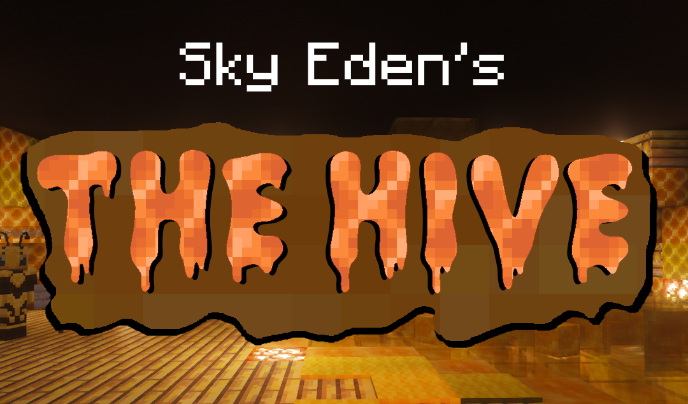

The Hive, Easter, and Globetrotter Mayor Voting
Golem_Leader - March 27, 2026
This spring, Sky Eden is buzzing with activity...
For those fortunate enough to have been around in the circa 1.12 era, some of you got to experience the Hive: A special dungeon (and Sky Eden's first, to be followed by the Skeleton Dungeon in the Halloween area). This featured bees before bees existed, challenges, puzzles, and, ultimately, prizes.
And then it was nuked when Mojang changed the command block formatting.
Just like that, the Hive was gone, and it was promised to return "someday" (just like the End Dungeon is only an update away).
Today is that day.
Starting today and ending never, you can find your way to the Hive (/warp hive) and meet Honeydew, a concerned Hive citizen who knows the Queen Bee is taking things too far. Join up with a friend to solve puzzles, fight vicious bees, and take on the Queen Bee. Why? Well, I'm sure there's some lore around to give you some clues...
The Hive is a mandatory-two-player experience, and getting past certain checkpoints in the dungeon will reward you with Beeswax Tickets, or Royal Jelly if you can defeat the Queen. But beware: You can't bring your own items into the Hive.
But, of course, that's not all. This news post is called "The Hive AND Globetrotter Mayor Voting" after all.
Last year, we saw the return of Sky Eden, and with it came the mega-ship Globetrotter. As you know, there was a Heist!, and the repercussions are finally being seen for Ex-Mayor Del. Players are now able to submit themselves to be a mayoral candidate for the Globetrotter!
Players have until April 5th, 2026 to submit their candidacy in the #mayoral-candidates channel on the Sky Eden Discord. From there, we will host events to let the candidates campaign (and maybe even debate). When the time is come on April 17th, 2026, all ballots will be due in the ballot box on board the Globetrotter.
Candidates may have platforms: things they would like to campaign on, with new objectives. For example, a mayor may choose to campaign on getting ten new players onto Eden. If the goal is met, they get a reward, the details of which can be discussed with staff.
The person elected mayor sees a few additional perks: First, they will receive a temporary Copper Golem pet, to stay with them through candidacy; second, a special mayoral tag to signify their status; third, a special suite on board the ship to decorate; fourth, access to the /taxes command, which allows them to collect 500 wings a week; and finally, a special mayoral hat, which they will pass on to the next mayor, as is tradition.
Our goal is to have this process occur every three months, perhaps around the same time as fishing competitions begin.
With this, the Heist! has come to an end, but there are still things to do on the ship: the Marsh Pilot and an engineer named Emre both have quests for you to complete.
Lastly, the annual Sky Eden Easter event goes live today, and runs until Sunday, April 5th. The main events are similar to last time: decorate an egg for the chance to win a Bunny Pet, make a spring-themed player skin for the chance to win 2 Rune Coupons, and spend your time hunting for eggs and baskets to get other fun prizes!
Other items to note with this update:
- The server is now on 1.21.11, the Mounts of Mayhem update. As such, spears are now available, and the McMMO Spears skill unlocks at explorer.
- New players will no longer be submitting an application to become a Citizen in Discord. Instead, they will confirm they've read the rules with /rules and have limited access to more destructive features.
- Enchanting via anvil should now be fixed.
- Server lag should be essentially gone (aside from ping).
- We've adjusted the way custom textures/models are done. As so, we've adjusted a few items on the donations page: custom tags, and custom model coupons.
- You can now manually oxidize (unwaxed) copper blocks by right-clicking them with a blaze rod.
- Removed Herobrine
